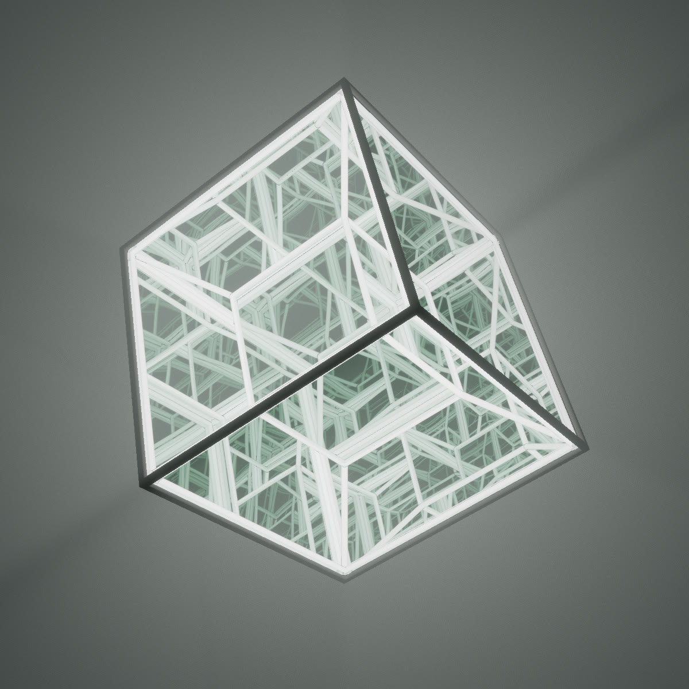

How Tesseract repeats
A convex solid with a dark steel frame, two-way mirror faces and a light tube along every edge, after Anthony James's infinity sculptures. Inside, the tubes reflect back and forth without end. Here is how that inside is traced, how its windows light the room, and how one solid turns into another.

Mirrors that never end
Day 8's prompt was Tesseract. It is an infinity polyhedron, after Anthony James's sculptures: a convex solid with a dark steel frame, faces of two-way mirror glass and a light tube along every edge inside. The mirrors send the tubes back and forth without end, and the solid opens onto a lattice of light in every direction. The page opens on a cube with a smaller cube nested inside and joined to it at every corner, the usual picture of a tesseract.
There are forty solids: Platonic, Archimedean and Catalan solids, prisms, antiprisms and bipyramids, with up to 64 faces, and a change morphs one into the next. The piece floats in a pale dome, which it lights through its windows.
The frame is a mesh rendered by the shared pipeline. The inside is ray traced exactly, per pixel, in the pipeline's composite pass, through dozens of bounces, with no reflection probes or screen-space tricks.
A polytope that never ends
Anthony James builds his infinity sculptures from the oldest shapes there are: an icosahedron, a dodecahedron, a cube. Each face is a pane of two-way mirror glass in a steel frame, and along every edge, inside, runs a light tube. The inner surfaces of the glass reflect the tubes back and forth, so from outside the solid opens onto a lattice of light that goes on in every direction, folded into a box you could carry.
The day's prompt was Tesseract, the four-dimensional cube. The page opens on its familiar picture: a cube with a smaller cube inside, joined to it at every corner, the way a hypercube is drawn in three dimensions. The mirrors do the rest, repeating it in every direction, so the solid seems to hold more inside than a solid can. Any other solid can nest itself the same way.
The day offers forty solids: the Platonic and Archimedean solids, the Catalan solids, and prisms, antiprisms and bipyramids, with up to 64 faces. Everything about them is described as planes.
Two-way mirrors, traced exactly
The frame is an ordinary mesh, rendered by the shared pipeline. The inside is not: it is ray traced per pixel, in a full-screen pass that the pipeline runs over its lit image before bloom. A solid is a list of planes n·p ≤ d, which makes every step exact and cheap.
A ray enters through the plane it crosses last on the way in, and inside it leaves through the plane it meets first. Where it meets a plane, the frame mesh's own test says whether it is in that face's window or behind the bar: it is behind the bar if it lies within the rim of another face's plane. In the window, the inner side of the glass reflects most of the light back in (Inner mirror), and the ray goes on, for up to 48 bounces. A tube in its way ends it.
Move the pointer over the figure to aim the ray. Below it is what that eye sees across the whole solid, one row of pixels: the same few tubes, over and over, fainter at each reflection. The marked pixel is the ray you are aiming.
A cross-section, from outside in
In 3D the tubes run along each window's edges, a little under the frame. A cross-section cuts them where they cross it, which is at the ends of each window. On the outside the glass shows a faint reflection of the room, more at grazing angles, and lets the See-through share of the inside out.
Imperfect glass
Real infinity sculptures are not perfect: the panes are not quite flat, not quite parallel, and the lattice inside bends and drifts the deeper it goes. That is where most of their life is, so the day reproduces it, without giving up the exact planes the tracer relies on. A pane's surface stays where it is; only the normal used to reflect off it is bent.
Warp bows each pane like a faint convex or concave mirror: the normal leans in proportion to how far the hit is from the face's centre, by a random amount and sign per pane. Tilt sets each pane a little askew, a fixed random lean for the whole pane. Ripple adds a smooth 3D noise to the normal, the waviness of float glass. A small error per bounce compounds: twenty reflections deep, the tubes have wandered off their lines and the corridors curve, as they do in the real pieces. A bent normal is never allowed to send the ray out through the glass it just met; that bounce falls back to the flat reflection.
The same flaws spread each ray's footprint at every bounce (see below), so deep reflections blur as they wander instead of shimmering. Uneven is the light, not the glass: each tube gets its own brightness and a slightly warmer or cooler white, as no two LED strips match. Every pane's and every tube's randomness is keyed by the direction its face points, not by its number, so it keeps its flaws when a morph adds or drops faces around it.
Twenty reflections deep, in one pixel
Deep in the reflections the tubes are far thinner than a pixel and closer together than two. A single ray per pixel either hits one or misses it, and the lattice breaks into sparkling noise that crawls as the sculpture turns.
So every ray carries its footprint: the pixel's angle times the distance it has travelled. The warped glass widens it at each bounce, and a glossy floor's blur widens it from the floor on. Each tube is box-filtered against it: the share of the footprint the tube covers lights the pixel, and only the rest goes on to the next bounce. Far enough in, a tube fades to its mean, which is what a camera sees.
A receding row of tube images
Slide moves the row by a fraction of a pixel, as a turning sculpture does: the point-sampled row flickers, the filtered row barely changes. Where a path goes deep on the sparser solids, two more rays across the pixel help at full quality. A ray with light left after the last bounce adds the mean of the rest: the tubes at the rate they cover the walls, over a geometric series of mirror bounces.
w(t) = pixelAngle · (1 + b · aberration) · (travelled + t) + floorSpread · (travelled since the floor + t)
// share of the footprint a tube of radius r covers, at distance h from its axis
cov = clamp((min(h + w/2, r) − max(h − w/2, −r)) / w, 0, 1)
Every window is a light
The sculpture is the only real light in the room; the studio is turned almost off. Each window gives off the inside's mean radiance through the two-way glass, so the floor and the wall are lit by a set of glowing polygons, one per face, with the frame's bars between them.
The soft way is exact. A polygon light of uniform radiance is integrated in closed form with the edge integral, one term per edge, the same one linearly transformed cosines are built on. Only the windows facing the point count: the convex solid hides the others. This gives broad, blurred shadows of the bars.
The sharp way treats it as if all the light came from the centre, through the windows, like a lamp through a gobo. A map baked once per solid says, for every direction from the centre, which face it leaves through and whether it leaves through the window or a bar. The floor then shows the frame's pattern crisply. Shadow sharpness blends the two, with the gobo scaled to carry the same power, so the room keeps its brightness.
Windows over a floor
In 2D a window's form factor seen from a point is half the difference of the sines of its ends' angles, and a point light falls off as 1/r rather than 1/r². The sculpture does the same with polygons in 3D.
The soft light changes slowly across the room, so it is worked out per vertex, not per pixel: the floor, the wall and the dome are meshes whose vertices bunch up near the sculpture, where the light changes fastest, and thin out far away. A window that is far from a vertex for its size counts as a point (its area, times the two cosines, over the squared distance); a near one gets the exact edge integral, blended between the two so no seam shows. The sharp light stays per pixel. In the sphere room, the default, the dome all around catches every window's light.
The haze uses the same map. The air around the sculpture scatters the light of its windows: along each camera ray, six samples are placed equiangularly around the sculpture's centre, where the scattering is strongest, and each is lit through the window its direction leaves through, or not, behind a bar. That draws the shafts of light out into the room. The samples move between the frames the pipeline averages while nothing moves, so they converge.
From one solid to the next, by its planes
A change of solid morphs, over a little more than two seconds. Because a solid is a set of planes, the solids in between are easy to make and always convex. Take every face direction of both solids. Put each plane at the blend of the two solids' support distances along it: how far each solid reaches in that direction.
At the start, the new solid's planes only touch the old one, at a vertex or an edge. As the blend goes on they cut in, and faces grow from those vertices and edges while the old ones shrink away into the new solid's. Every in-between is built in full: the faces, the windows, the tubes and the frame mesh. Window lights follow their face by its normal while faces come and go.
hS(n) = maxv ∈ S n · v
// in between, for every face normal n of A and of B
d(n, t) = (1 − t) · hA(n) + t · hB(n)
Two polygons, blended by their planes
Both polygons have a vertex pointing down, as every solid does in the day, so the morph grows out of shared corners. In 3D, mid-morph between two large solids, only the 64 biggest faces are kept; the rest are slivers.
Keeping it smooth takes care at both ends, where faces are slivers: thin strips and tiny corners that appear from nothing or vanish into nothing. Through a mirror lattice any jump is multiplied by every reflection, so a sliver must fade in and out rather than pop. Each face has a presence that grows with its inradius. A sliver's edges barely inset its neighbours' windows, barely count towards the rim's width, and barely shape the haze; its tubes, and any tube shorter than a few radii, are dimmed in proportion; and the window outlines are cleaned of the stray corners a sliver leaves along an edge. When a sliver finally drops out of the list, nothing it did is still visible. The angle the solid hangs at, the lights and the glass flaws ease over the same two seconds.
Glass, tubes and a solid inside
Controls
- Drag to turn the sculpture in your hand (a flick keeps it turning). Right-drag or two fingers orbit, scroll or pinch zoom.
- Click or tap a window to switch its light.
- Shape: Solid (morphs), Rim, Nodes, Inside and its size and spin, Spin.
- Lighting: Brightness, Lights, Tubes, Pattern, Dark windows, Animation.
- Surface: Glass and Amount, Inner mirror, See-through, Warp, Ripple, Tilt, Uneven, Bounces.
- Room: gallery or sphere, Haze, Floor gloss, Room light, Shadow sharpness.
- Camera: Aperture and Focus.
- R randomises, Space pauses, Tab hides the panel, F goes fullscreen, P saves a screenshot.